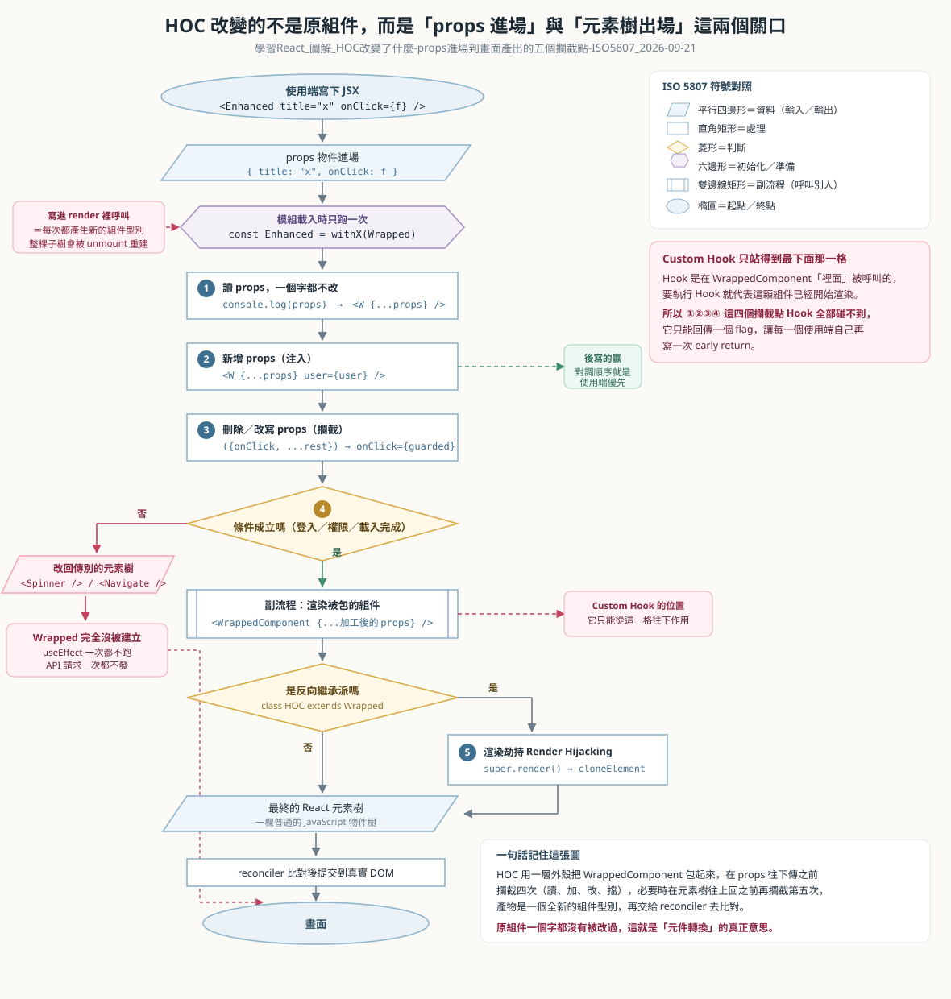
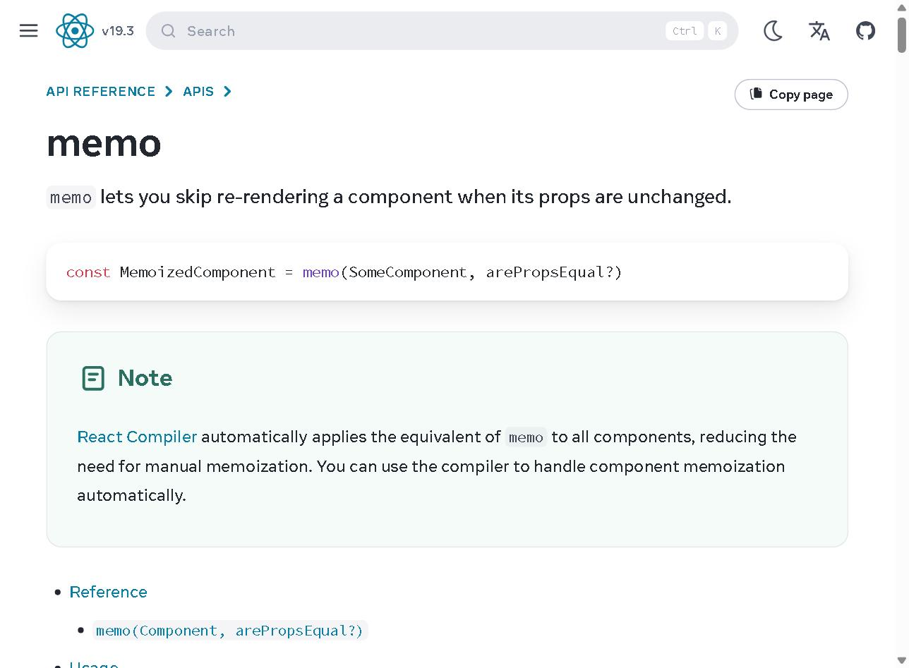
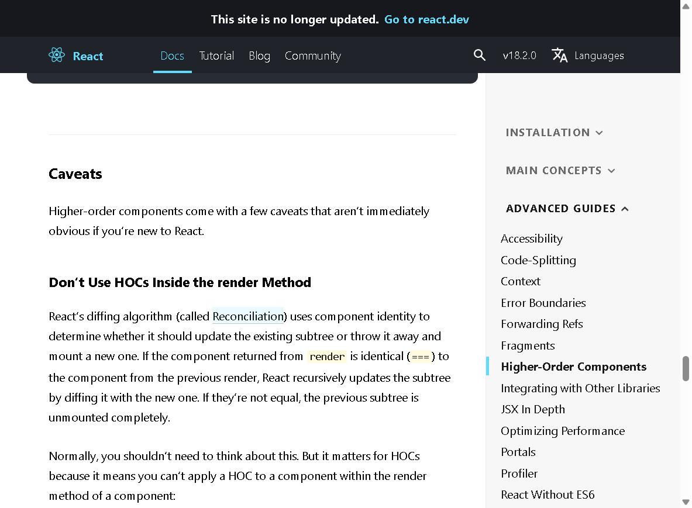
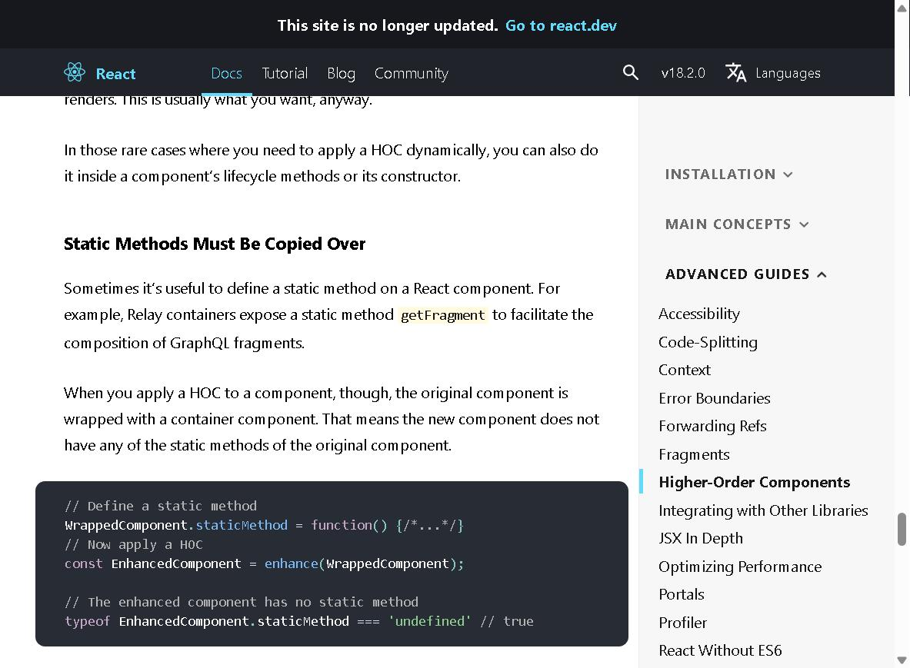

HOC 高階組件與渲染劫持｜反向繼承，以及 Vue / Angular 的對應機制
[!info] 本篇重點 a–l，共 12 個
起因是在看《前端面試寶典之 React 篇》影片，冒出「渲染劫持」這個詞，追問下去發現它其實是 HOC 的一種實作技巧，而且是已經被 React 官方淡出的舊派做法。第二個問題問得很好：「render 又不是 React 專有的，你是不是要講三大框架？」——答案是三個框架各有自己的複用機制，名字完全不同。
關聯筆記：高階函式與函數式範式-取代OOP三大設計模式 講「函式當參數與回傳值」這個底層骨架，HOC 就是它在組件層的投影，也就是 Decorator 裝飾者模式；00-前端框架比較-Vue-React-Angular難易度與優缺點 講三框架的整體取捨，這篇聚焦在「邏輯複用」這一個切面。
重點整理
一. 三個詞先定義清楚
(a) HOC（Higher-Order Component，高階組件）：一個「接收組件、回傳新組件」的函式。名字借自數學的高階函式（Higher-Order Function），差別只在處理的單位從函式變成組件。
(b) 渲染劫持（Render Hijacking）：在原組件真正被畫出來之前，攔截並修改它的渲染結果。這是 HOC 的一項技巧，不是另一個獨立概念。
(c) 反向繼承（Inheritance Inversion，II）：HOC 的兩種實作流派之一。另一種是屬性代理（Props Proxy，PP）。
[!note] 為什麼叫「反向」
正常繼承是「子類別繼承父類別」。這裡 HOC 是包裝者，理應是外層，卻反過來去extends被包裝的組件，讓包裝者變成子類別，包裝關係跟繼承關係方向相反，所以叫反向繼承。
二. 反向繼承的核心機制
(d) 關鍵：class HOC extends WrappedComponent。HOC 繼承了原組件，於是它拿得到原組件的 render、state、生命週期方法。
(e) 在 HOC 自己的 render() 裡呼叫 super.render()，就能拿到原組件產出的 React 元素樹（Virtual DOM），接著讀取、修改或整個覆蓋掉。
function withRenderHijack(WrappedComponent) {
return class extends WrappedComponent {
render() {
// super.render() 回傳原組件的 JSX 元素樹
const elementTree = super.render();
if (!this.props.isAllowed) {
return <p>沒有權限</p>; // 整個覆蓋
}
return React.cloneElement(elementTree, {
className: 'hijacked', // 修改屬性
});
}
};
}
(f) 逐行拆解：
function withRenderHijack(WrappedComponent)：慣例上 HOC 命名用with開頭，參數是「被包的組件」。return class extends WrappedComponent：回傳一個匿名 class，extends建立原型鏈（prototype chain），讓這個新 class 的實例可以往上找到WrappedComponent.prototype上的方法。super.render()：super指向父類別的原型，所以這句是「呼叫父類別版本的 render，但this仍然是我自己」，因此原組件的this.state與this.props都讀得到。React.cloneElement(elementTree, {...})：React 元素是不可變（immutable）的，不能直接改屬性，只能複製一份並覆寫。
追加 2026-09-11 Abby 問：「
if (!this.props.isAllowed)這句的this是誰？我記得 React 的this是 undefined」
你記得的沒有錯，只是那句話講的是「另外兩條路」。下面 (f-2) 到 (f-7) 把三條路一次分清楚。
(f-2) this 是「React 幫你 new 出來的那一顆組件實例」，它不是 withRenderHijack 這個工廠函式，不是 WrappedComponent 這個類別本身，也不是「另外一顆被包在裡面的實例」。

(f-3) 用 5W1H 把「為什麼是實例」拆乾淨：
- Who（誰呼叫 render）：React 的 reconciler（協調器）。
- 它先把這個匿名 class
new出一顆實例，存進 Fiber 節點的stateNode欄位，之後每次要畫這個組件，就對那顆實例呼叫render。
- 它先把這個匿名 class
- How（用什麼姿勢呼叫）：寫成
instance.render()這種「點號呼叫」。- JavaScript 的 隱式綁定（implicit binding，隱含綁定）規則是「呼叫那一刻，點號左邊那顆物件就是這次的
this」，所以this就是instance。
- JavaScript 的 隱式綁定（implicit binding，隱含綁定）規則是「呼叫那一刻，點號左邊那顆物件就是這次的
- What（
this.props這顆物件是什麼）：props是 React 直接寫在實例身上的 自有屬性（own property），它不在原型鏈上，Object.hasOwn(this, 'props')會是true。- 首次掛載時，匿名 class 沒有自己寫
constructor，JS 會替它補一個預設的衍生建構式constructor(...args) { super(...args) }，把 props 一路往上丟給WrappedComponent的建構式、再丟給React.Component的建構式，最後由後者做this.props = props。 - 之後每次更新，reconciler 會在呼叫
render之前先做instance.props = newProps，所以render裡讀到的永遠是這一輪最新的 props。
- 首次掛載時，匿名 class 沒有自己寫
- Where（
isAllowed的值從哪裡來）：從使用端的 JSX 屬性來。- 你在外面寫
<Protected isAllowed={user.role === 'admin'} />，這個isAllowed就被收進實例的props物件裡，render才讀得到。
- 你在外面寫
- Why（為什麼不可能是工廠函式）：
withRenderHijack只負責「吃一個組件、吐一個新 class」，它在模組載入時被呼叫一次就結束了，render執行的時候它早就離開呼叫堆疊，this根本輪不到它。 - When（什麼時候會變成 undefined）：在
render的第一層永遠不會。只有當你把方法「取下來」變成裸函式再呼叫，才會掉到下面 (f-4) 的第二條路。
(f-4) 「React 的 this 是 undefined」是真的，但它指的是下面第二、第三條路，不是 render 這條。三條路併排看：
| 你寫在哪 | 呼叫那一刻長什麼樣 | this 是誰 | 底層原因 |
|---|---|---|---|
class 組件的 render() 裡（本題） | instance.render() | 那顆組件實例 | 點號左邊有接收者（receiver），走隱式綁定 |
class 組件的事件處理器 onClick={this.handleClick} | handler(event) | undefined | 寫 this.handleClick 只是「把函式值讀出來」，接收者在那一刻就斷掉了，之後是裸呼叫 |
function 組件（function MyComp(props)） | MyComp(props) | undefined | 從頭到尾沒有 new 出實例，React 就是把它當普通函式呼叫 |
- 為什麼裸呼叫是
undefined而不是window：- class body（類別主體）永遠是 strict mode（嚴格模式），這是規格強制的，不用你寫
'use strict'。 - ES module（
import/export的檔案）也永遠是 strict mode，所以 function 組件同理。 - 非嚴格模式下裸呼叫的
this會 fallback（退回）成globalThis，嚴格模式把這個 fallback 拿掉了，直接留undefined。
- class body（類別主體）永遠是 strict mode（嚴格模式），這是規格強制的，不用你寫
- 事件處理器的兩個標準解法：
- 在
constructor裡寫this.handleClick = this.handleClick.bind(this)，用bind（顯式綁定，explicit binding）先把接收者釘死。 - 或直接寫成箭頭函式的 class field：
handleClick = () => { ... }，箭頭函式沒有自己的this，它從語彙環境（lexical scope）往外拿，而 class field 的初始化是在建構實例時跑的，外層剛好就是實例。 - 延伸閱讀：JavaScript-call-apply-bind-改變this指向 把 call / apply / bind 三者的差別與
this的綁定規則寫在一起。
- 在
(f-5) 反向繼承（II）與屬性代理（PP）的 this 差在哪，這是本題最容易混的地方：
| 反向繼承 Inheritance Inversion | 屬性代理 Props Proxy | |
|---|---|---|
| 寫法 | class extends WrappedComponent | class extends React.Component，render 裡寫 <WrappedComponent {...this.props} /> |
| 畫面上有幾顆實例 | 只有一顆 | 兩顆，外層一顆、內層一顆 |
this instanceof WrappedComponent | true | false |
this.state 讀得到原組件的 state 嗎 | 讀得到，因為根本是同一顆實例 | 讀不到，外層看不見內層的內部狀態 |
| 想拿到原組件實例要怎麼做 | 不用拿，this 就是 | 得靠 ref 把內層實例抓出來 |
- 所以「HOC 的
this是誰」沒有單一答案，要先問是哪一派：兩派的this都是「外層那顆實例」，差別在反向繼承讓外層與內層變成同一顆而已。
(f-6) 順手抓到的陷阱：範例把 const elementTree = super.render() 寫在權限判斷「上面」。
- 這代表
isAllowed是false、畫面只顯示「沒有權限」的時候，原組件的render其實已經完整跑過一次了，只是產出的元素樹被丟掉。 render照理應該是純函式所以通常無害，但只要原組件的render裡有console.log、計數器、Date.now()這類副作用就會被白白觸發，效能上也是白做工。- 要真的「連跑都不跑」，把守衛條件（guard clause）移到最上面：
render() {
if (!this.props.isAllowed) return <p>沒有權限</p>; // 先擋，才不會白跑
const elementTree = super.render();
return React.cloneElement(elementTree, { className: 'hijacked' });
}
(f-7) 想自己驗證不用背，在 render 第一行插幾句就看得到：
render() {
console.log(this === undefined); // false，render 裡一定有 this
console.log(this instanceof WrappedComponent); // 反向繼承是 true，屬性代理是 false
console.log(Object.hasOwn(this, 'props')); // true，props 是實例自有屬性，不在原型鏈上
console.log(Object.getPrototypeOf(this.constructor).name); // 看父類別是誰
// ...
}
三. HOC 具體「改變」了什麼——五個攔截點

[!info]+ 追加 2026-09-21 Abby 問：「它具體來說是怎麼樣去改變？HOC 的目的是元件轉換與條件式渲染」
方向完全正確，下面把「改變」這個動詞拆成五個可以用手指著看的攔截點。先記住一句話：HOC 從頭到尾沒有改過被包的那顆組件一個字，它是在外面新建一層殼，只攔截「props 往下傳」與「元素樹往上回」這兩個關口。
(g) 條件式渲染（conditional rendering）：HOC 這層殼自己決定要不要把 WrappedComponent 畫出來，對應主軸圖的④號菱形。權限控制與 Loading 狀態都屬於這一類。
function withAuth(Wrapped) {
return function WithAuth(props) {
const { user, loading } = useAuth();
if (loading) return <Spinner />;
if (!user) return <Navigate to="/login" replace />;
return <Wrapped {...props} user={user} />;
};
}
export default withAuth(Dashboard);
- 逐行白話：
function withAuth(Wrapped)：這是工廠函式，它吃一個組件進來，參數名Wrapped就是「等一下要被包起來的那顆」。return function WithAuth(props)：工廠吐出一顆全新的函式組件，它才是被export出去、真正被 React 掛到畫面上的東西。使用端寫<Dashboard />時，React 掛的其實是WithAuth。if (loading) return <Spinner />：第一條出路，畫一個轉圈。if (!user) return <Navigate to="/login" replace />：第二條出路，直接把路由導去登入頁。return <Wrapped {...props} user={user} />：第三條出路，這時候Dashboard才被建立。
- 關鍵在第二條出路：Dashboard 根本沒有被建立，它的 useEffect 一次都不會跑，它裡面的 API 請求一次都不會發。
- 這就是 Custom Hook 做不到的那件事，完整理由寫在下面的 (q)。
- 關聯：React-Context-Provider消費者-AuthProvider與路由保護 寫的是同一個需求的 Provider 版做法，可以並排看「同一個權限保護，兩種包法」。
(h) 修改／擴充元素樹：攔截 WrappedComponent 已經產出的 JSX，替換特定子元件、動態加 style 或 className、綁額外的事件監聽，對應主軸圖的⑤號方框。
- 這一條只有反向繼承派做得到，因為只有
class HOC extends WrappedComponent才拿得到super.render()這個入口，機制與逐行拆解已經寫在上面的 (d) 到 (f)。 - 屬性代理派拿不到元素樹，它能做的最多就是在外面再包一層
<div className="...">，改不動裡面。
(i) 操縱 props（Props Proxy，屬性代理）：在 WrappedComponent 被建立之前，先動手腳它即將收到的 props。這一條又可以再分成三種力道，對應主軸圖的①②③號方框。
(i-1) 只讀不改——最輕的一種，通常拿來做 logging 或 analytics。
function withLogging(Wrapped) {
return function WithLogging(props) {
useEffect(() => { console.log('[mount]', Wrapped.name, props); }, []);
return <Wrapped {...props} />;
};
}
- 逐行白話：
WithLogging掛載的時候印一筆 log，接著用展開運算子（spread operator）把自己收到的每一個 prop 原封不動灑回Wrapped身上，所以Wrapped完全不知道自己被包過。{...props}這一行是 HOC 的基本禮貌，官方把它列為慣例 Pass Unrelated Props Through。不寫的話，使用端寫的屬性會在 HOC 這一層被整個吃掉。
(i-2) 新增 props（注入）——Redux 的 connect() 與 React Router v5 的 withRouter() 就是靠這一招把 dispatch、history 憑空塞給你的組件。
function withUser(Wrapped) {
return function WithUser(props) {
const user = useContext(AuthContext);
return <Wrapped {...props} user={user} />;
};
}
- 逐行白話：先把外面傳進來的 props 全部灑進去，再多塞一個
user。- 書寫順序就是優先權：{...props} 寫在 user={user} 前面，代表 HOC 注入的 user 會蓋掉使用端傳的 user；兩者對調就變成使用端優先。這一行的左右順序決定「誰說了算」，也是下面 (o) 提到的 props 撞名會靜默覆蓋的真正原因。
(i-3) 刪除或改寫 props（攔截）——把某個 prop 撈出來換掉再傳下去。
function withConfirm(Wrapped) {
return function WithConfirm({ onClick, ...rest }) {
const guarded = (e) => { if (window.confirm('確定要送出嗎')) onClick?.(e); };
return <Wrapped {...rest} onClick={guarded} />;
};
}
- 逐行白話：
({ onClick, ...rest })：在參數上就地解構，把onClick單獨撈出來，剩下的全部用其餘參數（rest parameter）收成一包叫rest。const guarded = (e) => {...}：新做一個函式包住原本的onClick，先跳確認視窗，使用者按確定才呼叫原本那一個。onClick?.(e)的選擇性呼叫（optional call）是為了使用端根本沒傳onClick時不要爆掉。<Wrapped {...rest} onClick={guarded} />：把rest灑回去，再用新的guarded覆蓋onClick。所以Wrapped拿到的onClick已經不是使用端原本寫的那一個了，這就是「改寫」。
四. 為什麼是「React 的 render 方法」，不是通用概念
(j) 「渲染」是所有框架的通用概念，但「渲染劫持」這個做法只在 React 成立，原因是 React 的 JSX 本質上就是 JavaScript 函式呼叫與物件，super.render() 回傳的是一個普通 JS 物件樹，你當然可以拿來讀跟改。Vue 的 template 與 Angular 的 template 在編譯後被框架接管，開發者拿不到那個中間結構。
(k) 三框架對照：
| React | Vue | Angular | |
|---|---|---|---|
| 主要複用機制 | HOC、Render Props、Custom Hooks（現代主流） | Composition API（Composables）、Mixins、Scoped Slots | 依賴注入（DI）、結構型指令（*ngIf）、裝飾器 |
| 能不能改元素樹 | 可以，JSX 就是 JS 物件 | 一般不行，template 由編譯器接管（除非自己寫 Render Function） | 不直接改，改用 ViewContainerRef 操作視圖容器 |
| 心智模型 | 包一層函式 | 抽一支組合函式 | 注入一個服務或指令 |
(l) 面試提醒：如果被問到 HOC，記得補一句「React 16.8 之後官方推薦用 Custom Hooks 取代大部分 HOC 場景」。反向繼承因為會破壞組件的靜態方法繼承、讓 ref 難以傳遞、也不利於 React DevTools 除錯，實務上已經很少用。知道它是為了讀懂舊 codebase 與應付面試，不是為了拿來寫新專案。
- 但是千萬不要把「HOC 已死」講成一句話就收尾，因為 HOC 本身沒有被廢棄，被廢棄的只有「用 HOC 做邏輯複用」這一個用途。完整的五個理由與官方 caveats 寫在下面的 (p) 到 (s)。
程式碼範例
同層的 hoc-props-proxy-vs-inheritance-inversion.jsx 把兩種 HOC 流派並排寫出來對照。
同層的 hoc-this-三條路對照.jsx（2026-09-11 新增）把 (f-2)～(f-7) 做成可跑的檔案：它用 console.log 印出「render 裡的 this」「沒 bind 的事件處理器的 this」「function 組件的 this」三條路各自是誰，並且把反向繼承與屬性代理的 instanceof 與 state 可見性並排驗證。貼進任一個 React 18 專案的頁面，開 F12 Console 就看得到。
同層的 hoc-五個攔截點-可跑範例.jsx（2026-09-21 新增）把 (g)～(i-3) 五個攔截點做成一個可以直接跑的 <Demo />：按「登入」前後各點一次「送出」，Console 會依序印出 [withLogging] 收到什麼 props、[withConfirm] 攔到 onClick、[withAuth] 有沒有把 Card 擋下來、以及 [Card] 到底有沒有被掛載。檔尾還附了「千萬不要在 render 裡呼叫 HOC」的反例與正解。
練習題
| 題號 | 題名 | 為什麼相關 |
|---|---|---|
| 2666 | Allow One Function Call | 最小的「包一層、加行為」練習，HOC 的骨架 |
| 2623 | Memoize | 包一層並保留狀態，等同 HOC 快取 props 的心智模型 |
| 2632 | Curry | 函式回傳函式，理解高階函式的閉包基礎 |
| 2704 | To Be Or Not To Be | 回傳一個帶方法的物件，練習包裝者思維 |
各對話來源（原文）
高階組件與渲染劫持（2026-08）— https://gemini.google.com/app/3b8ff7e2ed0d9bd4
使用者： 高階組件與渲染劫持是有什麼相關內容
Gemini： 高階組件（Higher-Order Component，HOC）與渲染劫持（Render Highjacking）在 React 開發中是密不可分的概念。渲染劫持是高階組件（尤其是基於反向繼承 Inherited Inversion 的 HOC）的一項核心技巧與設計模式。
核心機制：當使用反向繼承（class HOC extends WrappedComponent）構建 HOC 時，HOC 繼承了原組件。在 HOC 的 render 方法中，透過呼叫 super.render() 即可獲取原組件的 React 元素樹（Virtual DOM），進而對其進行讀取、修改或覆蓋。
主要應用場景：條件式渲染（根據傳入的 props 或狀態決定是否渲染 super.render() 的內容，如權限控制、載入中 Loading 狀態處理）；修改／擴充 React 元素（攔截並修改 super.render() 返回的 JSX 元素樹，例如替換特定子元件、動態添加 style / className 或綁定額外的事件監聽）；操縱 Props（在元素被正式渲染前，攔截並替換／擴充子元件所接收到的 props）。
（Gemini 附註：使用者當時正在觀看《前端面試寶典之 React 篇》系列課程的「开篇词 如何拿下大厂前端面试」，來源標示為 Code Learning 编程教程，4,728 次觀看。）
使用者： 為什麼是 HOC 的 render 方法？Render 方法應該不是專屬 React 的，還是說你要表達的是 React、Angular 還有 Vue？
Gemini： 這裏提到的 render 方法與「渲染劫持」，確實是以 React 的組件模型為核心討論背景。
1. 為什麼是 HOC 的 render 方法：在 React 的 Class 組件中，render() 是核心的生命週期方法，負責返回描述 UI 的 Virtual DOM（JSX）。當使用反向繼承來實現 HOC 時，HOC 會繼承原組件，此時 HOC 重寫了 render() 方法，並可以在內部呼叫 super.render() 取得原組件的渲染結果。
2. 其他框架有類似的概念嗎：React 的 JSX 本質上就是 JavaScript 函數與物件，因此能在 render() 中直接讀取、操縱 Virtual DOM 結構。Vue 主要使用範本語法（Template），較少使用反向繼承式的 HOC，社群更傾向使用組合函數（Composables）或插槽。Angular 有強大的控制反轉與指令系統，透過指令就能直接操縱 DOM 或控制 ViewContainerRef，不需要透過 React 風格的 HOC 渲染劫持。
追加 2026-09-09：HOC vs Custom Hook——上面那條「⚠️ 存疑 2」的正式補完
[!info]+ 為什麼補在這裡
上一版最後那條更正寫著「Gemini 完全沒提到 HOC 已經被 Custom Hooks 取代」。這次另一段對話正好把兩者的差異問完了，剛好補上這個缺口，所以併進本篇而不另開新檔。
m. HOC 不是 High Order Class。全名是 Higher-Order Component（高階元件／高階組件），跟 class 完全無關。它的血統來自函數式程式設計的高階函數（Higher-Order Function）——接受函式當參數、或回傳函式的函式（例如 Array.prototype.map）。HOC 就是把「函式」換成「元件」：接受一個元件、回傳一個新元件的函式。
n. 兩者最根本的差別在「包什麼」與「吐什麼」：HOC 包住整個元件並回傳一個加強版元件（f(Component) → Component）；Custom Hook 抽出的是帶狀態的邏輯，由元件在內部呼叫來取得資料或方法（f(Args) → Data / Methods）。
| 比較項目 | Higher-Order Component (HOC) | Custom Hook |
|---|---|---|
| 主要目的 | 元件轉換與條件式渲染 | 邏輯與副作用的複用 |
| 輸入 → 輸出 | 元件 → 新的包裝元件 | 參數 → 回傳值／函式 |
| React DevTools 樹 | 多出一層層包裝節點（Wrapper Hell） | 不多出任何節點，樹是扁的 |
| 資料流 | 隱式：把 props 注入被包的元件 | 顯式：呼叫端自己解構取值 |
| props 撞名風險 | 高：外層 HOC 會靜默覆蓋既有 props | 零：變數名由呼叫端自己決定 |
| TypeScript 體驗 | 複雜（要泛型＋props 交集型別） | 單純（就是一般函式的參數與回傳型別） |
| 典型場景 | 舊函式庫（connect、withRouter）、版面包裝 | 現代 React 九成以上的邏輯（fetch、表單、驗證） |
| 執行時機 | 在目標元件外部、export 當下運作 | 在元件內部、每次 render 都跟著跑 |
o. 三個最痛的實務差異：
- Wrapper Hell：
withAuth(withRouter(withTheme(Dashboard)))疊起來，DevTools 會變成一團巢狀包裝；換成useAuth()、useTheme()、useParams()並排寫，一個節點都不會多。 - 隱式資料流：看到
<Dashboard/>裡用了props.user，你根本不知道它從哪個 HOC 來；兩個 HOC 都注入user時，其中一個會被默默蓋掉。Custom Hook 回傳值可以就地改名（const { user: currentUser } = useAuth()），撞名問題直接消失。 - 預設就用 Custom Hook（約 95% 的情況）。只有在「需要在很高的層級直接擋住整個元件不掛載」，或在必須包元件的舊式 API（Redux 的
connect()、React Router 的withRouter()）上才會用 HOC。
// A. HOC 版：從外面攔截，隱式注入 user
function withAuth(Wrapped) {
return function AuthProtected(props) {
const user = getCurrentUser();
if (!user) return <p>Access Denied. Please log in.</p>;
return <Wrapped {...props} user={user} />; // user 是「憑空出現」的 prop
};
}
export default withAuth(Dashboard);
// B. Custom Hook 版：元件自己開口要，資料來源一目了然
function useAuth() {
const [user, setUser] = useState(null);
useEffect(() => { setUser(getCurrentUser()); }, []);
return { user, isAuthenticated: !!user };
}
export default function Dashboard() {
const { user, isAuthenticated } = useAuth(); // 看得到來源
if (!isAuthenticated) return <p>Access Denied. Please log in.</p>;
return <h1>Welcome back, {user.name}</h1>;
}
p. 為什麼 2026 年了，線上面試題還是一直考 HOC——五個理由。（追加 2026-09-21，Abby 問「既然被 Custom Hooks 取代了，為什麼還有很多線上前端面試考題有這個東西」）
- HOC 沒有被淘汰，被淘汰的只有「用 HOC 做邏輯複用」這一個用途。 React 核心 API 至今仍有兩個是不折不扣的 HOC：
React.memo(Component)與React.forwardRef(render)，兩者都是吃一個組件、吐一個新組件。memo在 react.dev v19.3 的文件裡是現行 API，不是 legacy。
react.dev v19.3 的 memo頁面（截於 2026-09-21）：簽名就是memo(SomeComponent, arePropsEqual?)，吃組件吐組件，標準 HOC。 - 它是一面照妖鏡，一題同時考四個 JavaScript 基本功。 面試官問 HOC 的時候其實在看：你知不知道「組件本身就是一個值」（一級函式，first-class function）；你會不會展開與其餘參數的解構；你懂不懂閉包（工廠函式跑完就離開呼叫堆疊了，回傳的那顆組件卻還記得住
Wrapped）；你講不講得出 reconciliation（協調）拿什麼來比對組件身分。- 關聯：useState底層-Fiber-Tree-memoizedState與過期閉包 講的就是「函式跑完了變數卻還活著」這件事的記憶體真相，HOC 記得住
Wrapped用的是同一套機制。
- 關聯：useState底層-Fiber-Tree-memoizedState與過期閉包 講的就是「函式跑完了變數卻還活著」這件事的記憶體真相，HOC 記得住
- legacy codebase 遍地都是。 Redux 的
connect()、React Router v5 的withRouter()、Relay 的容器、react-i18next的withTranslation()全都是 HOC。面試官要確認的是「你接手一個 2018 年的專案時看不看得懂」。 - Custom Hook 有五件事做不到，見下面的 (q)。
- 官方那三條 caveats 本身就是三道獨立考題，尤其第一條「不要在 render 裡呼叫 HOC」是經典必考，見下面的 (r)。
q. Hook 與 HOC 的能力邊界：差別不在「新舊」，在「站的位置」。 Custom Hook 是在 WrappedComponent 的內部被呼叫的，HOC 是站在它的外部。位置決定了能力，主軸圖右側那塊粉紅色說明框標的就是這條界線。
| 需求 | Custom Hook | HOC | 為什麼 |
|---|---|---|---|
| 共用帶狀態的邏輯（fetch、表單、計時器） | 可以，而且是首選 | 可以但不划算 | Hook 的回傳值由呼叫端自己命名，撞名問題直接消失 |
| 讓被包的組件完全不要掛載 | 做不到 | 可以 | 要執行 Hook 就代表那顆組件已經在渲染了；Hook 只能回傳一個 flag，early return 必須在每一個使用端各寫一次 |
| 在組件外面再包一層 JSX（ErrorBoundary、Provider、版面外殼） | 做不到 | 可以 | Hook 回傳的是資料不是 JSX 外殼，它沒有辦法把呼叫它的那顆組件包起來 |
| 攔截或改寫使用端傳進來的 props | 做不到 | 可以 | Hook 看不見呼叫它的組件收到哪些 props，除非呼叫端手動傳進去 |
| 攔截 DOM 事件或 callback（統一加 stopPropagation、加確認視窗） | 做不到 | 可以 | 同上，要改 props 上的那顆函式就必須站在外面 |
| 切斷 context 造成的 re-render 連鎖（context selector） | 單靠 Hook 做不到 | 可以 | useContext 只要 context 值一變就一定重跑；要斷開往下的 re-render 鏈，必須有一層可以被 memo 包住的組件 |
- 最後兩列的論證來自 Nadia Makarevich 的 Developer Way 文章（2022-02-27），她的原話是 components can memoise things and stop the chain of re-renders going down to children，Hook 沒有這個能力。
r. React 官方 Higher-Order Components 文件列出的三條 caveats，每一條都是獨立考題。
| caveat | 會出什麼事 | 正解 |
|---|---|---|
不要在 render 方法裡面呼叫 HOC | 每一次 render 都產生一個全新的組件型別，reconciler 用 === 比對組件身分時發現不相等，於是把整棵舊子樹完整 unmount 再重新 mount，state 與子組件 state 全部歸零 | HOC 只在模組頂層呼叫一次；真的需要動態套用，寫在 constructor 或生命週期裡 |
| 靜態方法不會被自動繼承 | Enhanced.staticMethod 會是 undefined，因為 HOC 回傳的是一個全新的容器組件 | 用 hoist-non-react-statics 這個函式庫把非 React 的 static 複製到新組件上 |
| ref 不會透傳 | ref 不是普通的 prop，它會指到最外層的包裝組件，不是你要的那一顆 | React 16.3 到 18 用 React.forwardRef 手動轉；React 19 起 ref 變成一般的 prop，函式組件直接從 props.ref 收，官方說之後的版本才會正式棄用 forwardRef |
| （慣例，不在 caveats 但一定要做）displayName 沒設 | React DevTools 上顯示成一串匿名節點，看不出誰包了誰 | 設 Enhanced.displayName = `withX(${getDisplayName(Wrapped)})`，包成巢狀時才看得出層次 |

=== 不相等就 unmount completely。
typeof EnhancedComponent.staticMethod === 'undefined' 是 true。- 第一條的底層原因就是reconciliation（協調）用組件身分而不是內容來判斷要不要重用子樹，關聯：React兩階段渲染-Render與Commit-Mount-Update-Unmount生命週期 把 mount 與 unmount 各自會跑哪些生命週期寫得很清楚，配著看就知道「state 全部歸零」到底歸零了什麼。
s. 邏輯複用機制的編年史：每一代都是在補前一代的洞，看懂這條線就不會把 HOC 講成「舊的所以爛」。
- 面試時把這條線講出來，比背「HOC 已被 Hooks 取代」強十倍，因為它證明你知道每一代是為了解決什麼問題而生，而不是只記得結論。
[!tip]+ 面試怎麼答
先講公式差異（包元件 vs 抽邏輯），再講三個實務痛點（Wrapper Hell、隱式 props 撞名、TS 型別複雜度），最後補一句「所以現代 React 預設用 Custom Hook，HOC 主要出現在 legacy API 與版面包裝」。這樣就完整避開上面「⚠️ 存疑 2」提到的、停留在 React 15 時代的印象。
資料來源（含查證時間）
| 主題 | 連結 | 版本 / 查證時間 |
|---|---|---|
| Gemini 對話原文 | https://gemini.google.com/app/3b8ff7e2ed0d9bd4 | 2026-08，本次歸檔 2026-08-25 |
| 追加段：HOC vs Custom Hook 對照、HOC 全名釐清 | https://gemini.google.com/app/d2896b718a5f3c00 | Gemini 對話，整理於 2026-09-09 |
| React 官方文件（舊版）Higher-Order Components | https://legacy.reactjs.org/docs/higher-order-components.html | React 17 舊文件，官方已標示為 legacy，查證 2026-08-25 |
| React 官方：Reusing Logic with Custom Hooks | https://react.dev/learn/reusing-logic-with-custom-hooks | 現行推薦做法，查證 2026-08-25 |
React cloneElement API |
https://react.dev/reference/react/cloneElement | 查證 2026-08-25 |
| Vue：Composables | https://vuejs.org/guide/reusability/composables.html | Vue 3，查證 2026-08-25 |
| Angular：Structural Directives | https://angular.dev/guide/directives/structural-directives | 查證 2026-08-25 |
追加段 (f-2)～(f-7)：this 的判定 |
本次問答，整理於 2026-09-11 | Abby 提問「HOC 裡 this 是誰」 |
MDN：this 運算子（含隱式綁定與 strict mode 下不 fallback 成 globalThis） |
MDN this | 查證 2026-09-11 |
| MDN：Classes（明載 class body 永遠在 strict mode 下執行） | MDN Classes | 查證 2026-09-11 |
MDN：Function.prototype.bind |
MDN bind | 查證 2026-09-11 |
React 官方：Component（this.props 由 React 設定、render 由 React 呼叫） |
react.dev Component | 查證 2026-09-11 |
| React 官方（舊版）：Handling Events，事件處理器要 bind 的原因 | legacy Handling Events | React 17 舊文件，查證 2026-09-11 |
[!warning] ⚠️ 存疑 / 更正
1. Gemini 把英文拼成 「Render Highjacking」與「Inherited Inversion」，兩個都拼錯了。正確是 Render Hijacking（沒有 h）與 Inheritance Inversion（不是 Inherited）。查英文資料時拼錯會找不到。
2. Gemini 完全沒提到 HOC 已經被 Custom Hooks 取代，語氣像是在推薦現行做法。反向繼承在現代 React 幾乎不用，面試講的時候要自己補這一句，否則會顯得停留在 React 15 的時代。
3. 影片觀看數與課程名稱是 Gemini 從畫面抓的即時資訊，不保證正確，僅供回溯當時情境。
由 Gemini 對話自動整理 · 更新於 2026-08-25 · 2026-09-11 追加「HOC 裡的 this 是誰」與主軸圖